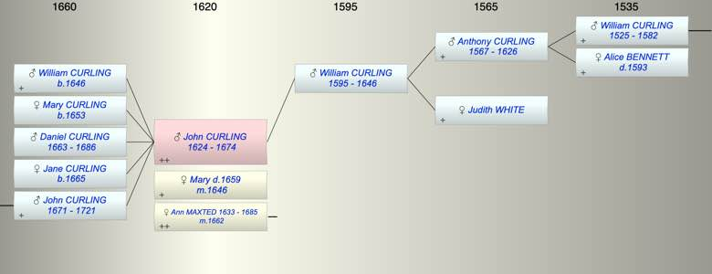

| [Index] |
| John CURLING (1624 - 1674) |
|  |
| b. abt 1624 |
| m. (1) abt 1646 Mary ( - 1659) |
| m. (2) 19 Jun 1662 Ann MAXTED (1633 - 1685) at St Alphege, Canterbury |
| d. 1674 aged 50 |
| Parents: |
| William CURLING (1595 - 1646) |
| Children (5): |
| William CURLING (1646 - ) |
| Mary CURLING (1653 - ) |
| Daniel CURLING (1663 - 1686) |
| Jane CURLING (1665 - ) |
| John CURLING (1671 - 1721) |
| Events in John CURLING (1624 - 1674)'s life | |||||
| Date | Age | Event | Place | Notes | Src |
| abt 1624 | John CURLING was born | still to be found | |||
| 1646 | 22 | Birth of son William CURLING | St Peters | Note 1 | |
| abt 1646 | 22 | Married Mary | |||
| 1646 | 22 | Death of father William CURLING (aged 51) | St Laurence | Note 2 | |
| 1653 | 29 | Birth of daughter Mary CURLING | St Peters | Note 3 | |
| 13 Mar 1659 | 35 | Death of wife Mary | St Peters, Thanet | Note 4 | |
| 19 Jun 1662 | 38 | Married Ann MAXTED (aged 29) | St Alphege, Canterbury | Note 5 | |
| 1663 | 39 | Birth of son Daniel CURLING | St Laurence | Note 6 | |
| 1665 | 41 | Birth of daughter Jane CURLING | St Laurence | Note 7 | |
| 1671 | 47 | Birth of son John CURLING | St Laurence | Note 8 | |
| 1674 | 50 | John CURLING died | Note 9 | ||
| Personal Notes: |
|
We postulate that he is the father of John Curling who married Mercy Long.
There is a marriage of John Curling of St Peter in Thanet, maltster, widower to Ann Curling widow of William Curling late of St Lawrence at St Alphege in Canterbury on 19 June 1662, Robert Maxted of St Lawrence afsd bonds (ex Canterbury Marriage Licences). The reference to Robert Maxted is perhaps significant as Ann Maxted was baptised in 1633 daughter of Robert Maxted and she had a brother Robert baptised in 1632. This suggests that Robert who underwrote the marriage bond for her second marriage was either her father or her brother (the father may have died about 1660). The transcript of the St Alphege parish register (page 80) has the bride's christian name missing and less detail. The Canterbury Cathedral Archives as on Findmypast seem to have only the transcript. Familysearch has the marriage of John Curling but not the bride's christian name. There appear to be three children from this marriage: Daniel 1663, Jane 1665 and John 1671. The baptism for John on 28 Dec 1671 fits with the birth year of John Curling who married Mercy Long. We know that Ann Maxted married William Curling in 1651 and we know William died in April 1660 so it is very likely that she was the Ann Curling, widow of William Curling, who married John Curling in 1661. William Curling and Ann Maxted married in 1651 and had two daughters and a son: Elizabeth b 1653 Ann b 1654 John 1657 - 1665. We know John was a widower when he married Ann in 1662. John Curling’s first wife Mary died in 1659 (p 633 of St Peter’s register). William baptised 27 Dec in 1646 and Mary baptised 25 Sep 1653 p 570) at St Peter's with parents John and Mary Curling were likely to be his children. There is no marriage record about 1644 (fits with his birth after 1625) which would have taken place during the interregnum. However there are other Curling marriages at St Peters in this period. Will of John Curling – PRC1773309 made 20 Jan 1672, proved 6 Feb 1674 • John Curling of parish of St Peter the Apostle in the Isle of Thanet Yeoman • to son William - the house, Malthouse, garden, orchard and outbuildings together with one piece of land enclosed therein in St Peters in which John is living at the time of his will making - 8 acres lately purchased from the Sampsons which John stipulates are to lie together when the land is divided. - £20 • to son John the remainder of the lands purchased from the Sampsons • to son Daniel the house orchard garden barne stable yard and 10 acres of land in St Peter’s, Thanet, purchased from Mr Knight • to daughter Mary £60 upon marriage • daughter Jane £10 • Residue to wife Anne who is to be the sole executrix. Witnesses John Simer [?], William Maxted and John Gules [?] NB William Maxted was a witness. |
| Created on a Mac™ using iFamily for Mac™ on 8 Oct 2023 |